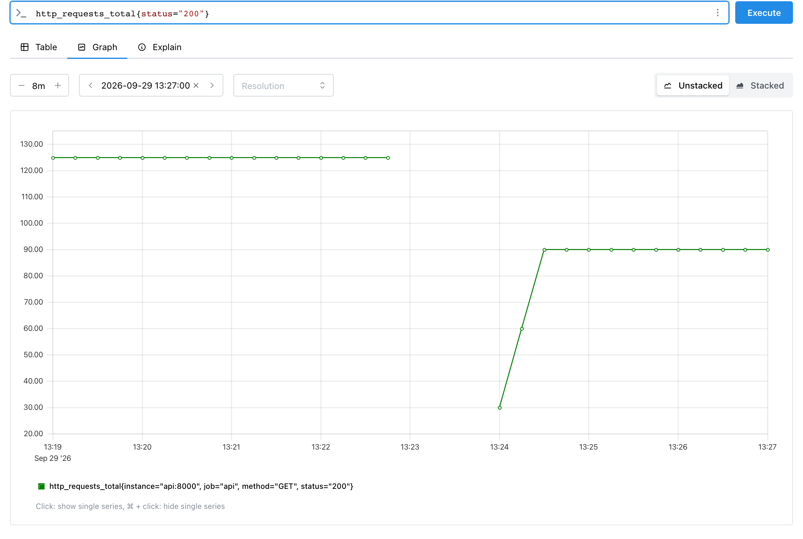

Счётчикcounter
Метрика, значение которой с момента запуска программы только растёт. Каждое событие прибавляет к ней число.
Примерпринятые заказы, ошибки оплаты, отправленные байты.
Гделекция 2.2, §1–§4
Метрики и наблюдаемость · часть 2 · метрики в коде
Лекция 2.5
Значение счётчика говорит о времени работы программы, а нагрузку показывают рост и скорость. В лекции — как их считают, что происходит со счётчиком при перезапуске и когда сброс остаётся незамеченным.
prometheus-client 0.26.0Лекция откроется по одному разделу: на экране одна мысль, кнопка «Дальше» ведёт к следующей. Стрелки ← → на клавиатуре тоже листают, Esc возвращает всю лекцию.
Почему у счётчика смотрят, насколько значение выросло за промежуток.
Пробег машины «84 000 км» говорит о её возрасте. Сколько машина ездит сейчас, показывает «700 км за неделю». Со счётчиком так же: сервис, работающий неделю, накопил миллион запросов, запущенный вчера — тысячу. Нагрузка у них может быть одинаковой.
Нарисуем оба сервиса полосами: длина — накопленное значение счётчика, синий хвост — запросы за последние 15 секунд.
Верхняя полоса длинная: сервис работает неделю и накопил миллион запросов. Нижняя короткая: тысяча за день. Синие хвосты одинаковые — оба сервиса за последние 15 секунд получили по 30 запросов. По длине полос нагрузку не сравнить, по хвостам — можно. Длину такого хвоста называют ростом.
requests = Counter("http_requests", "HTTP-запросы", registry=registry) def handle_request(): requests.inc() for _ in range(500): # сервис работает давно handle_request() before = registry.get_sample_value("http_requests_total") for _ in range(30): # за следующие 15 секунд пришло 30 запросов handle_request() after = registry.get_sample_value("http_requests_total") print("значение:", after) print("рост:", after - before) print("скорость:", (after - before) / 15, "запроса в секунду")
значение: 530.0 рост: 30.0 скорость: 2.0 запроса в секунду
Число 530 складывается из давней истории и последних 15 секунд. Prometheus считает рост так же — по отсчётам на краях промежутка. Для этого в его языке запросов есть функции increase (рост) и rate (скорость).
Значение счётчика говорит о времени работы программы. О нагрузке говорят рост и скорость.
Рост считается вычитанием, пока программа работает без остановок. При перезапуске счётчик ведёт себя иначе.
Что происходит со счётчиком, когда программа перезапускается.
Шагомер в телефоне днём показал 8 000 шагов. Телефон перезагрузился, и счёт начался с нуля. Счётчик ведёт себя так же: он хранится в памяти процесса, а новый процесс начинает с чистой памяти.
orders = Counter("orders", "Принятые заказы", registry=registry) orders.inc(3) print(registry.get_sample_value("orders_total"))
$ python main.py 3.0 $ python main.py 3.0
Второй запуск начал с нуля и снова дошёл до трёх. В сервисе это выглядит так. В опыте с сервисом заказов счётчик дошёл до 40, в 15:05:26 сервис перезапустили, затем пришло 10 запросов. Prometheus опрашивал сервис раз в 15 секунд.
Следом сервис перезапускают.
Через несколько секунд работает уже новый процесс.
Те же события в таблице отсчётов, по времени опросов:
| Время, UTC | 15:04:58 | 15:05:13 | 15:05:28 | 15:05:43 | 15:05:58 | 15:06:13 |
|---|---|---|---|---|---|---|
| Значение | 40 | 40 | нет ответа | 10 | 10 | 10 |
Отсчёты в базе Prometheus. Опрос 15:05:28 пришёлся на перезапуск. Выделен первый отсчёт после сброса.
Значение упало с 40 до 10. Счётчик уменьшаться не может, поэтому любое уменьшение Prometheus считает сбросом. Вычитание дало бы 10 − 40 = −30 — отрицательное число запросов.
Так сброс выглядит в интерфейсе Prometheus. Кадр снят на стенде сервиса 29.09.2026: запрос http_requests_total{status="200"}, вкладка Graph, последние 8 минут.

До 13:22:41 линия стоит на 125: запросов не было, счётчик не менялся. В 13:22:41 приложение остановили, и опросы перестали получать ответ — на графике разрыв. После запуска новый процесс начал с нуля, и линия продолжилась уже снизу: 30, затем 60 и 90. Падение со 125 до 30 и есть сброс, который Prometheus находит по уменьшению значения.
Значит, рост через сброс нужно считать по особому правилу.
По какому правилу Prometheus считает рост, если в отсчётах был сброс.
Шаги за день после перезагрузки телефона считают так: 8 000 шагов до неё плюс всё, что набралось после. Prometheus считает рост счётчика по тому же правилу. Запишем его функцией на Python. Она сравнивает каждые два соседних отсчёта:
def growth(samples): """Рост счётчика по отсчётам: уменьшение считается сбросом.""" total = 0 resets = 0 for prev, cur in zip(samples, samples[1:]): if cur >= prev: total += cur - prev else: # сброс: после него рост — всё новое значение total += cur resets += 1 return total, resets print(growth([10, 10, 40, 40, 10, 10, 10])) print(growth([100, 130, 15, 45]))
(40, 1) (75, 1)
zip(samples, samples[1:])Составляет пары соседних отсчётов. Для [100, 130, 15, 45] пары такие: (100, 130), (130, 15), (15, 45).if cur >= prevЗначение не уменьшилось — обычный рост, прибавляем разность.else: total += curЗначение уменьшилось — был сброс. Новый процесс начал с нуля, значит, всё его значение и есть рост после сброса.Прогон на живых данных. Добавим печать в цикл и пройдём второй пример — [100, 130, 15, 45] — по парам:
def growth(samples):
total = 0
resets = 0
for prev, cur in zip(samples, samples[1:]):
if cur >= prev:
total += cur - prev
print(f"({prev:>3}, {cur:>3}) рост +{cur - prev:<3} total = {total}")
else:
total += cur
resets += 1
print(f"({prev:>3}, {cur:>3}) сброс +{cur:<3} total = {total}, resets = {resets}")
return total, resets
print(growth([100, 130, 15, 45]))
(100, 130) рост +30 total = 30 (130, 15) сброс +15 total = 45, resets = 1 ( 15, 45) рост +30 total = 75 (75, 1)
Первая пара — обычный рост на 30. Во второй значение упало со 130 до 15: это сброс, и к росту прибавлены все 15 — столько насчитал новый процесс. Третья пара — снова рост на 30. Итого 30 + 15 + 30 = 75 и один сброс.
Первый список — отсчёты опыта из §2 вместе с двумя более ранними, когда счётчик стоял на 10. Отсчёта «нет ответа» в списке нет: в базу он не попал. Рост 40 — это 30 запросов до перезапуска и 10 после. Второй список разобран на схеме:
Синие линии — обычный рост, его считают разностью соседних отсчётов. Оранжевый пунктир — перезапуск: значение упало до нуля, разность здесь не считают. Оранжевая точка 15 — первый отсчёт после сброса, функция берёт её значение целиком (ветка else). Сумма подписей +30, +15 и +30 даёт 75 из вывода.
Правило опирается на уменьшение значения. Если уменьшения в отсчётах нет, сброс останется незамеченным.
Какой перезапуск не виден в отсчётах и сколько событий из-за него теряется.
process_start_time_seconds — момента запуска процесса.Опыт: счётчик стоял на 40, сервис перезапустили сразу после опроса, и до следующего опроса пришло 60 запросов. На схеме — что было в памяти сервиса и что попало в базу:
Оранжевый пунктир — что происходило в памяти сервиса: 40, падение до нуля, быстрый рост до 60. Синяя линия — что записала база. Опросы пришлись на моменты до и после перезапуска, поэтому в базе только рост 40 → 60. Падение уложилось между двумя точками и в базу не попало. Проверим, что посчитает функция growth из §3 по таким отсчётам:
print(growth([40, 40, 40, 60, 60]))
(20, 0)
Пришло 60 запросов, а рост посчитан как 20. У функции, как и у Prometheus, есть только отсчёты, а переход 40 → 60 похож на обычный рост. Prometheus в этом опыте насчитал тот же рост 20 и ни одного сброса.
Чем реже опрос, тем больше событий успевает накопиться между отсчётами и тем вероятнее такая потеря. О перезапуске говорит изменение process_start_time_seconds. На Linux библиотека добавляет эту метрику сама.
Проверим это на модели: сбросы можно устроить самим и посмотреть, когда рост считается неверно.
Как сбросы влияют на рост — на модели, которой управляете вы.
Ниже модель сервиса и Prometheus. Кнопка «Событие» прибавляет к счётчику в памяти процесса, «Опрос» записывает текущее значение в базу, «Перезапуск» начинает новый процесс с нуля. Справа модель считает рост по отсчётам тем же правилом, что функция growth из §3, и сравнивает его с настоящим числом событий.
Слева вверху — номер процесса и число в его памяти. На графике — отсчёты в базе. Синие отрезки — обычный рост, оранжевый пунктир и оранжевая точка — первый отсчёт после перезапуска. В таблице строки после перезапуска выделены. Внизу справа модель сравнивает рост по отсчётам с числом событий после первого опроса.
Сценарий «Видимый сброс» повторяет опыт из §2: 40 событий, опрос, перезапуск, 10 событий, опрос. Значение в базе падает с 40 до 10, модель находит сброс, и рост 10 совпадает с числом событий. Сценарий «Скрытый сброс» повторяет опыт из §4: после перезапуска приходит 60 событий. Значение в базе растёт с 40 до 60, сброса не видно, и модель показывает потерю 40 событий.
Сброс теряется, если между двумя опросами процесс перезапустился и успел насчитать больше, чем было до перезапуска. Чем чаще опрос, тем меньше событий успевает накопиться между отсчётами.
Дальше — частая задача для счётчика: подсчёт ошибок в коде.
Что пишут неправильно и как исправить.
| Что написано | Что произойдёт | Как правильно |
|---|---|---|
| смотреть на значение счётчика | число растёт вместе со временем работы программы | смотреть рост или скорость |
| рост как «последнее минус первое» | после перезапуска рост отрицательный или заниженный | учитывать сброс, как growth в §3 |
Задача на то, что разобрано в лекции. Решение спрятано под задачей.
Ситуация:
Найти, сколько событий произошло между первым и последним отсчётом и сколько было сбросов. Проверить ответ функцией growth из §3.
Пары соседних отсчётов: 5 → 12 даёт +7, 12 → 12 даёт 0, 12 → 3 — уменьшение, значит сброс, и прибавляется всё новое значение 3. Затем 3 → 9 даёт +6, 9 → 20 даёт +11. Всего 7 + 0 + 3 + 6 + 11 = 27 событий и один сброс.
print(growth([5, 12, 12, 3, 9, 20]))
(27, 1)
Вопросы по лекции. Ответ раскрывается щелчком.
75: 30 до сброса, 15 при сбросе и 30 после. Разность «последнее минус первое» дала бы −55.
Рост 200 и ни одного сброса. Уменьшения в ряду нет, поэтому сброс не замечен, хотя после перезапуска пришло 700 событий.
По метрике process_start_time_seconds: её значение — момент запуска процесса, и при перезапуске оно меняется.
Сброс между отсчётами 80 и 30: значение уменьшилось. Рост: +30, +30, затем 30 при сбросе и +40 — всего 130.
Конструкции лекции одним списком.
конец − началозначение уменьшилось+ всё новое значениеprocess_start_time_secondsincrease(...)rate(...)Термины лекции, включая введённые раньше: формулировка, пример и рисунок.
Метрика, значение которой с момента запуска программы только растёт. Каждое событие прибавляет к ней число.
Примерпринятые заказы, ошибки оплаты, отправленные байты.
Гделекция 2.2, §1–§4
Один запрос Prometheus к /metrics программы. Опросы повторяются через равные промежутки — интервал опроса.
Примеринтервал 15 секунд: опросы в 15:04:58, 15:05:13, 15:05:28.
Гделекция 2.5, §2
Одно значение метрики, полученное при опросе, вместе с моментом опроса.
Примерв 15:04:58 счётчик был равен 40.
Гделекция 2.4, §2; лекция 2.5, §2
Все отсчёты одной метрики с одним набором значений меток, выстроенные по времени. Одна строка ответа /metrics даёт при каждом опросе один отсчёт своего ряда.
Примерorders_total{status="paid"} — один ряд, {status="cancelled"} — другой.
Гделекция 2.3, §1
На сколько счётчик увеличился за промежуток времени. Без сбросов — значение в конце минус значение в начале.
Примербыло 500, через 15 секунд 530: рост 30.
Гделекция 2.5, §1
Рост, делённый на длину промежутка в секундах. Показывает, сколько событий происходит в секунду.
Примеррост 30 за 15 секунд — 2 события в секунду.
Гделекция 2.5, §1
Запущенная программа со своей памятью. Метрики хранятся в памяти процесса. Когда процесс завершается, память освобождается.
Примерpython main.py — каждый запуск создаёт новый процесс.
Гделекция 2.5, §2; лекция 2.6, §3
Возврат счётчика к нулю при перезапуске процесса. Prometheus находит сброс по уменьшению значения и прибавляет к росту значение после сброса.
Пример100, 130, затем 15, 45: рост 30 + 15 + 30 = 75.
Гделекция 2.5, §2–§3
Сброс между двумя опросами, после которого значение выросло выше прежнего. В отсчётах нет уменьшения, и события до перезапуска пропадают из роста.
Примерв базе 40 → 60, а пришло 60 запросов: посчитан рост 20.
Гделекция 2.5, §4
Метрика с моментом запуска процесса в секундах с 1 января 1970 года. Меняется при каждом перезапуске, поэтому выдаёт и скрытый сброс. На Linux prometheus-client добавляет её сама.
Примерзначение изменилось между двумя опросами — процесс перезапускался.
Гделекция 2.5, §4
Значение счётчика говорит о времени работы программы, нагрузку показывают рост за промежуток и скорость. При перезапуске счётчик сбрасывается в ноль. Prometheus находит сброс по уменьшению значения и прибавляет к росту значение после сброса. Сброс между опросами, после которого значение выросло выше прежнего, в отсчётах не виден.